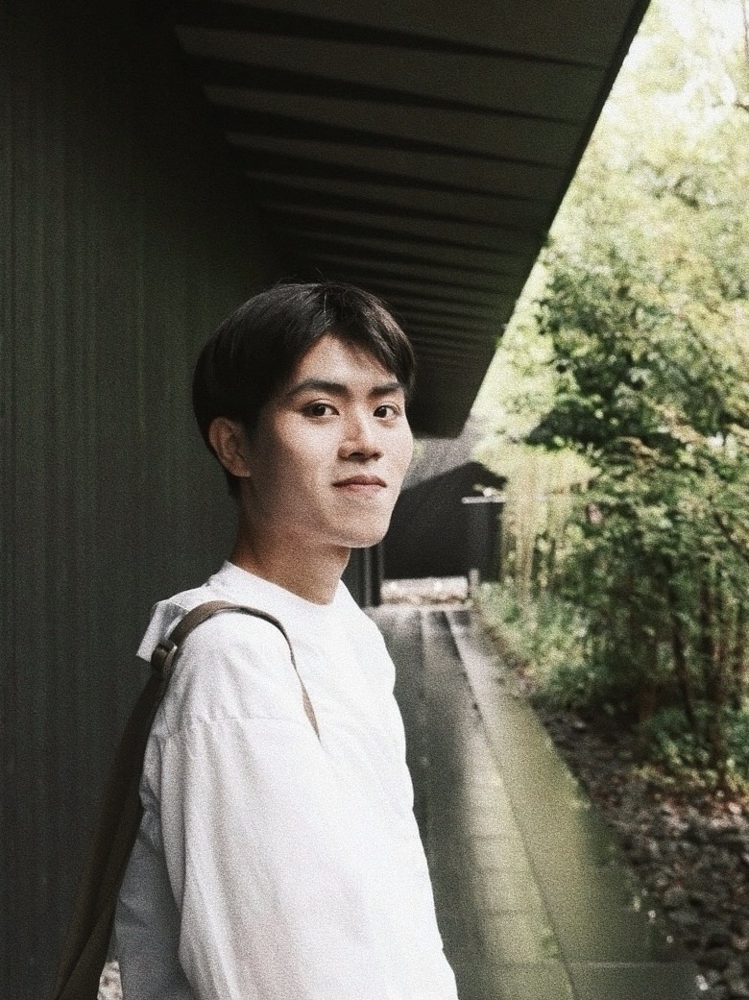
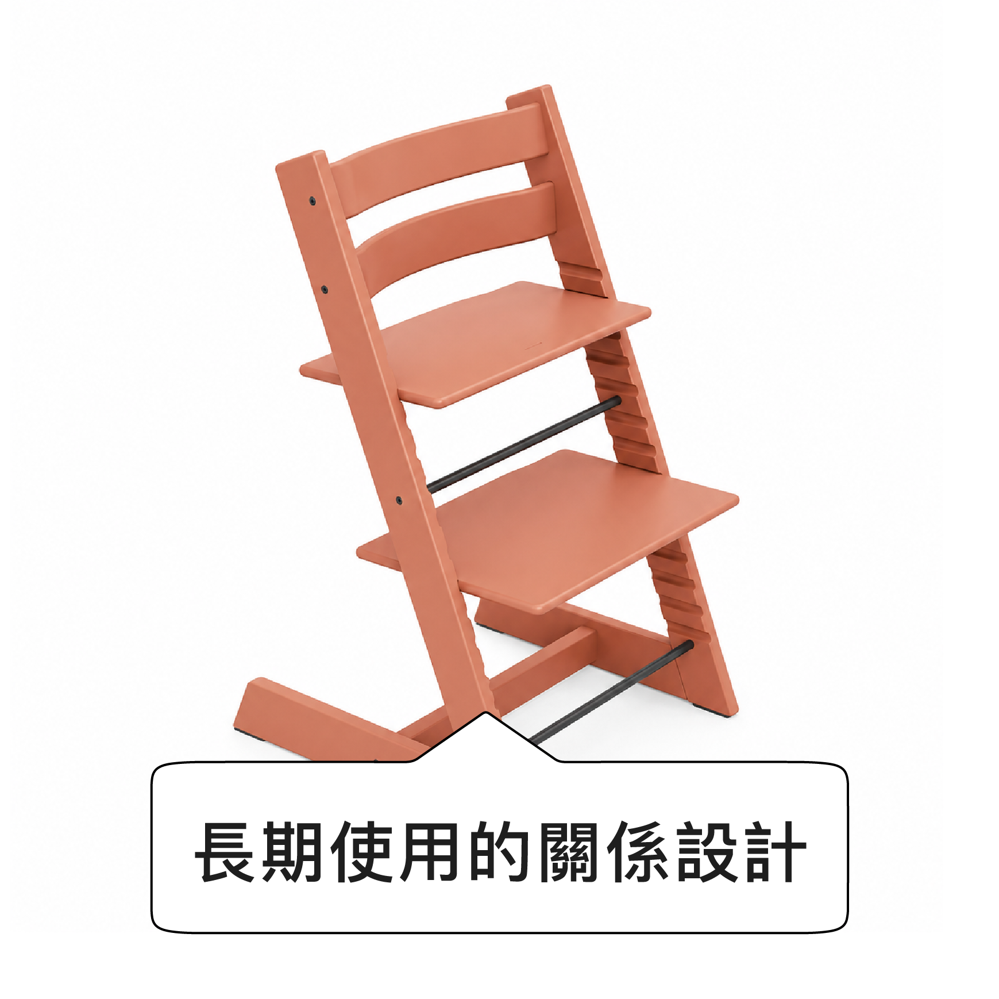
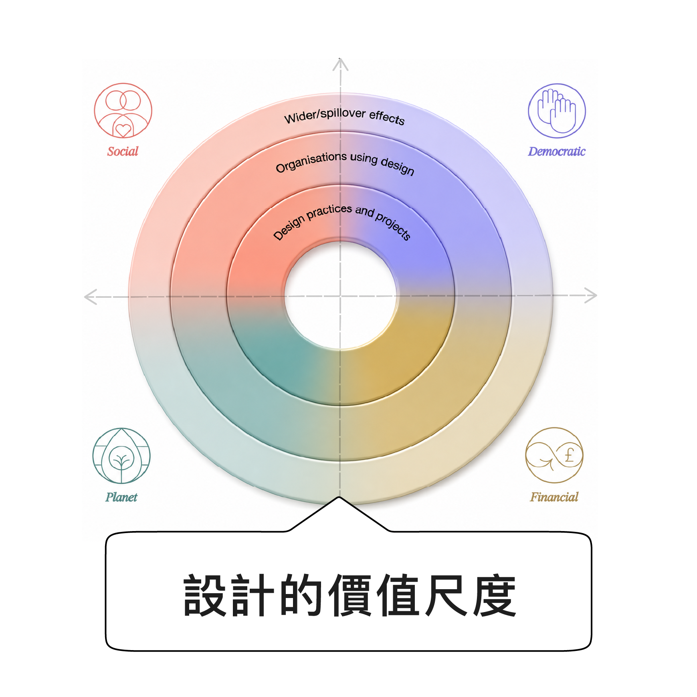
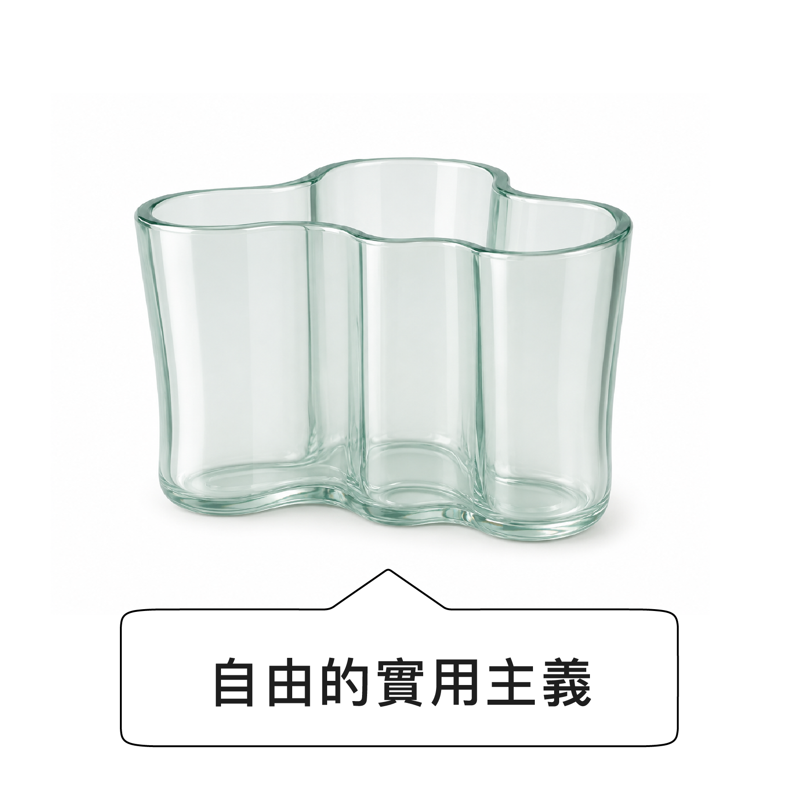
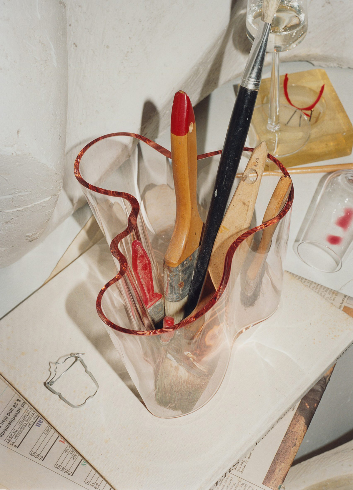

ChanWei
連展蔚
設計研究
永續設計
服務設計
地方議題研究
循環設計研究
永續行為設計

設計研究
永續設計
服務設計
地方議題研究
循環設計研究
永續行為設計
我的思考與工作方式
How I Think & Work
我關注設計如何創造環境友善、社會包容且延續文化脈絡的系統與體驗。
面對開放式的設計議題，我喜歡透過大量發散來辨識問題的潛在成因與限制條件；我也喜歡研究人在特定情境中的意圖與行動門檻，並思考設計如何讓行動更自然地發生。
我喜歡設計的地方
What I Care About in Design
我喜歡設計把人的感受、需求與日常中的限制放進判斷，也同時思考對於環境與未來的責任。
對我而言，好的設計不只在形式與氛圍上具備美觀和吸引力，更是落在細節裡關懷、考量不同使用族群的處境、限制與需求，並與社會和環境形成更友善、永續且負責任的關係。
這些作品，慢慢形塑了我理解設計的方式。

Paimio Sanatorium
Alvar Aalto, 1929–1933
Paimio Sanatorium 是為結核病療養而設計的建築。Aalto的設計核心並非築起一棟醫院，而是讓建築本身成為療養工具。
設計從病人的臥床視角與日常感受出發，病房採兩人一室，減少大病房的干擾；窗戶導入光線與通風，並避免直接氣流吹向病人；天花板採低彩度灰綠色，並以間接照明避免光線直射病人視線，降低長時間臥床時的視覺負擔；洗手台後壁則以 30 度角設計，降低濺水與水聲，避免一位病人洗手時打擾另一位病人。這些細節使建築不只是容納治療，而是包容性照護。
設計從病人的臥床視角與日常感受出發，病房採兩人一室，減少大病房的干擾；窗戶導入光線與通風，並避免直接氣流吹向病人；天花板採低彩度灰綠色，並以間接照明避免光線直射病人視線，降低長時間臥床時的視覺負擔；洗手台後壁則以 30 度角設計，降低濺水與水聲，避免一位病人洗手時打擾另一位病人。這些細節使建築不只是容納治療，而是包容性照護。


Tripp Trapp®
Peter Opsvik, 1972
Tripp Trapp® 是 Peter Opsvik 為 Stokke
設計的成長椅。它的出發點來自孩子長大後，傳統高腳椅不再適合，但成人椅又無法讓孩子自然坐到餐桌旁。
Tripp Trapp® 把成長變化放進長期使用裡，透過可調整高度與深度的座板、腳踏板，讓同一張椅子能隨著嬰兒、幼兒、兒童到成人階段持續使用。它的價值不只在於耐用，而是讓家具隨著人的身形變化、家庭互動與日常節奏一起調整，使孩子能自然進入共享餐桌的生活場景。
Tripp Trapp® 把成長變化放進長期使用裡，透過可調整高度與深度的座板、腳踏板，讓同一張椅子能隨著嬰兒、幼兒、兒童到成人階段持續使用。它的價值不只在於耐用，而是讓家具隨著人的身形變化、家庭互動與日常節奏一起調整，使孩子能自然進入共享餐桌的生活場景。


Design Value Framework
Design Council, 2022
Design Value Framework 將設計影響從成果本身，延伸至社會文化、環境、民主參與／治理與財務經濟層面。
它不只評估設計帶來的正面效益，也用來辨識可能被忽略的負面影響與價值取捨，並將設計過程、生產方式、使用生命週期與外溢影響納入判斷。


Savoy Vase
Alvar Aalto, 1936
Savoy Vase
以不規則的曲線與不對稱瓶口，打破傳統花器對稱、規整與固定輪廓的想像。它沒有將形式收束於單一功能，而是在花器的用途之外，保留了更開放的使用彈性。可以作為花器，也能成為空間中的雕塑物件，或被使用為盛裝果物與日常物件。
Savoy Vase 的設計不只在於造型辨識度，也在於讓功能與情境保持可被重新詮釋的彈性。
Savoy Vase 的設計不只在於造型辨識度，也在於讓功能與情境保持可被重新詮釋的彈性。